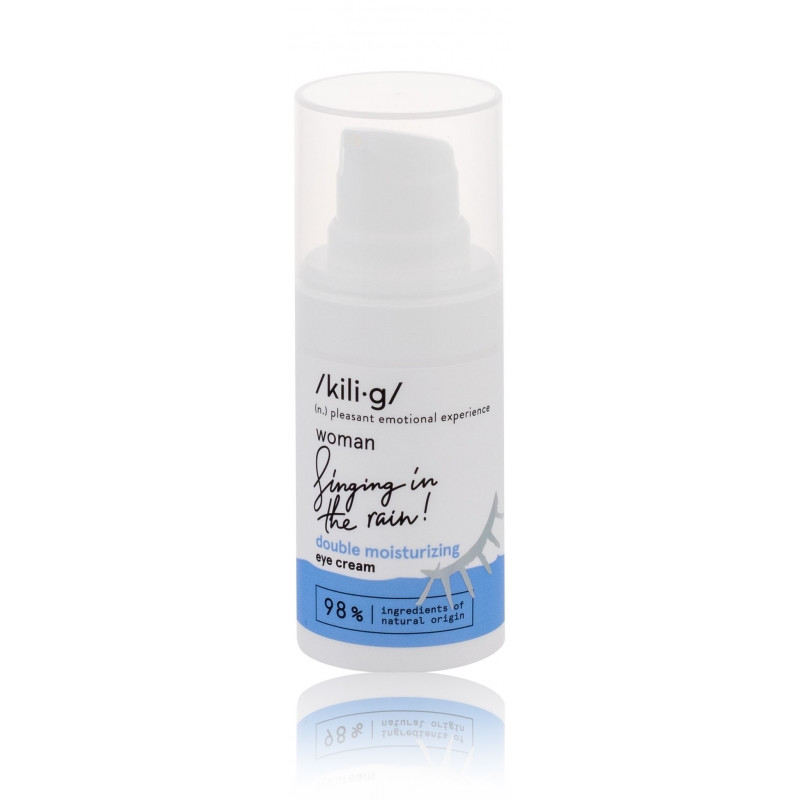

Riešutų kremas - Saldukas - Riešutai Jums
 Skip to content Apie mus Kontaktai Prisijungti Krepšelis / € 0.00Krepšelyje nėra produktų.
Krepšelis
Krepšelyje nėra produktų.
Pradžia Naujienos Prieskonių mišiniai Prieskoniai be druskos Prieskoniai su druska Prieskoniai žvėrienai Marinatai rub’ai Prieskoniai Prieskoninės žolelės ir kt Prieskoninės sėklos Džiovintos daržovės Pipirai Konditerijos prieskoniai ir priedai Profesionaliai virtuvei Kiti produktai Riešutų kremas Kruopos Riešutai ir vaisiai Džiovinti vaisiai Riešutai Kava Arbata Dovanėlės ir rinkiniai Sportas Akcijos Apie mus KontaktaiRiešutų kremas
Be pridėtinių riebalų, druskos, cukraus. Pagaminta Lietuvoje!
Greitas pristatymas
Po užsakymo gavimo ir jo apmokėjimo, galimas pristatymas 1-2 darbo dienomis naudojant Venipak pristatymo tarnyba.
Kiekio nuolaidos
Kuo daugiau perki, tuo didesne procentinę nuolaidą gauni nuo kainos.
50-100€ nuolaida 2%
100-200€ nuolaida 5%.
200 € ir daugiau nuolaida 10%
Nemokamas pristatymas
Perkant už daugiau nei 35€ , nemokamas pristatymas Lietuvoje
Riešutų kremas
Riešutų kremas, ne tik puikus desertas, bet ir sotus užkandis (aukšta maistinė vertė!), puikiai tinkantis prieš ar po treniruotės. Pusryčiams ar užkandžiaujant tepkite ant vaisių, trapučių, baltos duonos, maišykite į košes, pieno ir ledų kokteilius, arba tiesiog kabinkite šaukštu prie kavos/arbatos. O gal iškepkite sausainių/pyrago ar kitų kepinių ir pasikvieskite artimuosius/draugus pasivaišinti?Be pridėtinių riebalų, druskos, cukraus. Pagaminta Lietuvoje! € 35.00 liko iki nemokama pristatymo -% Švelnus Įsiminti prekę + Greita peržiūra
Žemės riešutų kremas švelnus „Smooth“ 100% linija
€ 4.90 – € 6.90 -% TOP prekė Įsiminti prekę + Greita peržiūraDesertinis kokosų-žemės riešutų kremas
€ 13.70 € 11.70 -% Įsiminti prekę + Greita peržiūraMigdolų riešutų kremas 100% linija
€ 7.50 – € 17.15 -% Tradicija Įsiminti prekę + Greita peržiūraŽemės riešutų kremas gabaliukais traškus 100% linija
€ 8.80 € 6.80 -% Tradicija Įsiminti prekę + Greita peržiūraŽemės riešutų kremas SALDUKAS gabaliukais traškus 100% linija
€ 7.20 € 6.20Daugiau kategorijų
Riešutų kremas
5 Produktai
Proteinas
5 Produktai
Sportas
10 Produktai
Profesionaliai virtuvei
7 Produktai
Kruopos
9 Produktai
Arbata
8 Produktai
Kava
7 Produktai
Pipirai
14 Produktai
Marinatai rub'ai
19 Produktai
Prieskoniai be druskos
20 Produktai
Prieskoniai su druska
23 Produktai
Prieskoniai žvėrienai
9 Produktai
Prieskoninės sėklos
19 Produktai
Džiovintos daržovės
20 Produktai
Prieskoninės žolelės ir kt
19 Produktai
Konditerijos prieskoniai ir priedai
33 Produktai
Riešutai ir vaisiai
29 Produktai
Dovanėlės - rinkiniai
8 Produktai
Kalėdinės dovanos
8 Produktai
Apie mus UAB Saldukas, amžina tradicija, visada pasiūlys įvairiausių prieskonių, prieskonių mišinių, prieskoninių žolelių, konditerijos žaliavų, džiovintų riešutų-vaisių ir daug kitų produktų iš Lietuvos ir viso pasaulio.
Tai pat teikiame pakavimo paslaugas, mažo ir didelio tiražo pakuotės sprendimus šventėms, parduotuvėms ir ne tik.
Bal Receptai: Žvėrienos kepenys (trumpi receptai) 02
Kov Receptas: Medaus tortas 26
Vas Receptas: Gaivios salotos su vištiena 21
Vas Receptas: nugarinės palendricos vytinimas 25
Rgs Mūsų prieskoniai Garam masala, kas tai ? 20
Bir Lęšiai: ne tik sotu, bet ir sveika Žymės allspice aštrus bazilikas ciberžolė citrina dažai garstyčios Grynuoliai grynuolis herb herbs hot kalendra Kepiniai krapai kvapnieji kvapnusis lauro lapai mairunas maltas marinatai Medziotojams Mišiniai mustard paprika parsley pepper petražolės pipiras prieskoniai Prieskonis raudonėlis Rinkiniai rozarinas saldi saldu seklos spice Spice mix spices sweet zolelės česnakas čiobreliai želatina Apie mus Kontaktai Copyright 2020 © All rights reserved Pradžia Naujienos Prieskonių mišiniai Prieskoniai be druskos Prieskoniai su druska Prieskoniai žvėrienai Marinatai rub’ai Prieskoniai Prieskoninės žolelės ir kt Prieskoninės sėklos Džiovintos daržovės Pipirai Konditerijos prieskoniai ir priedai Profesionaliai virtuvei Kiti produktai Riešutų kremas Kruopos Riešutai ir vaisiai Džiovinti vaisiai Riešutai Kava Arbata Dovanėlės ir rinkiniai Sportas Akcijos Apie mus Kontaktai Prisijungti × produktai įdėti į krepšelį × Login with Facebook Login with Google